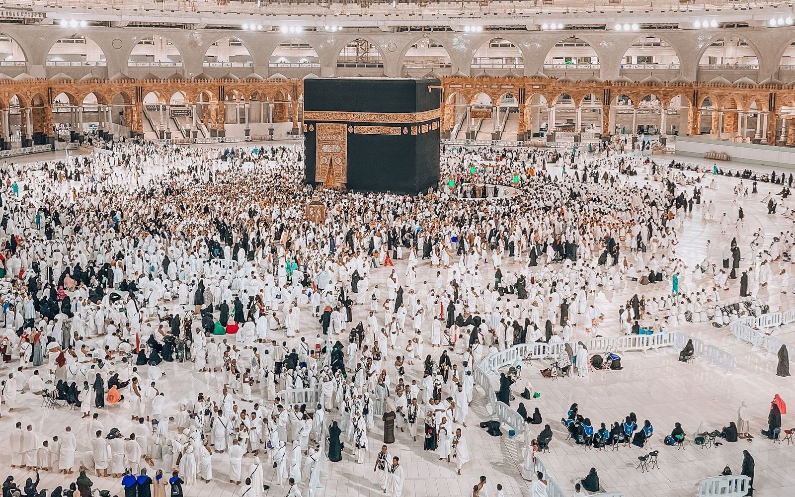

Умра со своим поколением
Не ждать, пока станешь лучше, чтобы прийти к Аллаху. Приходить к Аллаху — чтобы становиться лучше.

UMRA YOUTH | 01Умра в группе, где всем неудобно
Один темп на всех
В обычной группе вместе едут пожилые люди, семьи с детьми и молодёжь. Темп, режим и ожидания у всех разные — и это мешает каждому.
Молодые откладывают
Многие думают: «поеду потом, когда стану лучше» — и не находят группу, где было бы комфортно со своим поколением.
После поездки — снова один
Умра заканчивается, а окружения, которое помогает держаться и расти дальше, нет.
Группы по ритму жизни — три формата
Каждый едет со своими: молодёжь — с ровесниками, семьи и старшее поколение — в спокойном темпе, а тем, кто хочет индивидуально, — Signature.
Создавать пространство, в котором молодые мусульмане могут прийти к Умре не в одиночку, а вместе со своим поколением — через поклонение, знания, сильное окружение и живое братство.
Поклонение
Умра в центре — всё остальное помогает совершить её осознанно.
Знания
Гид-устаз объясняет обряды и историю святых мест Мекки и Медины.
Окружение
Легче становиться лучше, когда рядом люди, которые тоже к этому стремятся.
Братство
Дружба, которая остаётся после поездки: встречи, общение, новые цели.
Ты можешь быть молодым. Амбициозным. Современным. И одновременно стремиться к Аллаху.
Что дальше
- UMRA YOUTH | 01Первая молодёжная группа — открыт наборнабор
- UMRA YOUTH | 02Следующий потокскоро
- UMRA YOUTH COMMUNITYСообщество участников после поездкискоро
- UMRA YOUTH MEETUPВстречи и живое общениескоро
- UMRA YOUTH ACADEMYЗнания и развитие: обучение для молодых мусульманскоро
Поездка в Мекку и Медину под ключ
smart-travel.kz организует Умру из Казахстана с вылетом из Алматы и Астаны в трёх форматах: Umra Youth для молодёжи, Umra Family для семей и старшего поколения, Umra Signature — VIP. Берём на себя визу в Саудовскую Аравию, перелёт в Джидду или Медину, отели рядом с Харамом и мечетью Пророка ﷺ, трансферы и сопровождение на обрядах.
Мекка
Отели в шаговой доступности от Масджид аль-Харам и Каабы. Объясним порядок обрядов Умры — ихрам, таваф и саъй — и поможем спланировать дни.
Медина
Проживание рядом с Масджид ан-Набави, посещение мечети Куба и исторических мест. Переезд между Меккой и Мединой — скоростным поездом Харамейн или комфортным трансфером.
Форматы и цены
Umra Youth — молодёжная группа, Umra Family — семьи и старшее поколение, Umra Signature — VIP. Цена зависит от дат и отеля: точную стоимость и ближайшие вылеты пришлём в WhatsApp.
Виза в Саудовскую Аравию
Электронную визу для Умры оформляем онлайн по фото паспорта — для граждан Казахстана и всей семьи. Статус заявки виден в личном кабинете.
Вылеты из Алматы и Астаны
Сейчас вылеты на Умру — из Алматы и Астаны. Заявку и визу можно оформить онлайн, а даты ближайших вылетов менеджер пришлёт в WhatsApp.
Приходи к Умре вместе со своим поколением
Напиши нам — расскажем о датах UMRA YOUTH | 01 и ответим на вопросы. Для семей и VIP — Umra Family и Umra Signature.
Часто задаваемые вопросы
Не нашли ответ — напишите нам в WhatsApp, ответим лично.
Написать в WhatsAppКто едет в группе Umra Youth?
Только молодёжь — без смешения с пожилыми паломниками и семьями с детьми. Точный возраст группы и даты набора уточнит менеджер в WhatsApp.
Можно поехать одному, без друзей?
Да. В этом и идея UMRA YOUTH: ты приходишь один, а едешь вместе со своим поколением и возвращаешься с новыми друзьями.
Как оформить визу в Саудовскую Аравию?
Загрузите фото разворота паспорта на странице «Виза» — анкета заполнится автоматически. Проверьте данные, добавьте паспорта всей семьи и отправьте заявку. Менеджер свяжется с вами в WhatsApp.
Какие документы нужны для Умры?
Загранпаспорт, действующий не менее 6 месяцев с даты въезда, и фотография. Для детей — свидетельство о рождении, для несовершеннолетних, которые едут без родителей, — нотариальное согласие. Точный список менеджер уточнит под вашу поездку.
Сколько времени занимает оформление визы?
Обычно несколько дней — решение принимает МИД Саудовской Аравии. Ход оформления можно отслеживать на странице «Мои заявки». Подавайте заранее, особенно перед Рамаданом и праздниками.
Может ли женщина поехать без махрама?
Правила Саудовской Аравии сейчас позволяют женщинам совершать Умру без махрама в составе организованной группы. Условия могут меняться — менеджер уточнит актуальные требования перед бронированием.
Что входит в стоимость тура?
Зависит от формата: перелёт, проживание, трансферы, виза, питание и сопровождение на обрядах. Состав и даты пришлём в WhatsApp — нажмите «Узнать подробнее» на карточке формата.
Когда лучше ехать на Умру?
Умру совершают круглый год, кроме дней Хаджа. Самые востребованные периоды — Рамадан и зимние месяцы: места и отели рядом с Харамом лучше бронировать заранее.
Как узнать статус моей заявки?
Откройте «Мои заявки» и введите номер заявки и телефон, который указали при оформлении. Там видно каждый этап и комментарий менеджера.
Сколько стоит Умра из Казахстана?
Цена зависит от формата, дат и отеля. Umra Youth — для молодёжи, Umra Family — для семей и старшего поколения, Umra Signature — VIP. Напишите в WhatsApp — пришлём стоимость на ваши даты.
Сколько дней длится поездка на Умру?
Сами обряды Умры занимают несколько часов, а поездка обычно длится от 7 до 14 дней: несколько ночей в Мекке и в Медине. Длительность подберём под ваш график.
Из каких городов вылет на Умру?
Сейчас — из Алматы и Астаны. Из других городов вылетов пока нет. Даты ближайших вылетов уточнит менеджер в WhatsApp.